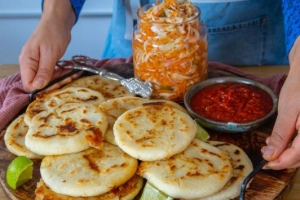
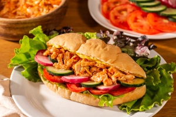
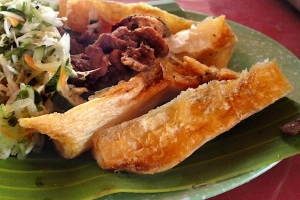
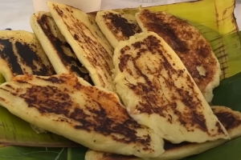

Salvadoran cuisine is flavorful, comforting, and deeply
rooted in tradition. It often features ingredients like
corn, beans, cheese, plantains, and meat. Many recipes
are passed down through generations and are central to
family gatherings and national celebrations.

🫓 Pupusas
🥖 Pan con Pollo


🍠 Yuca Frita
🌽 Riguas
